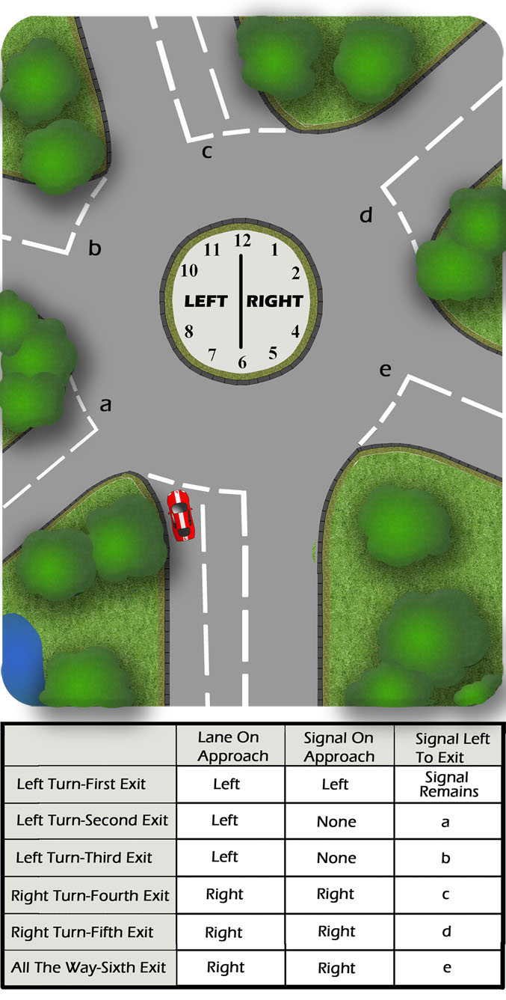

Signal timing can be very important:
- Too early and traffic may think you’re exiting earlier. They may then emerge in front of you.
- Too late and traffic may think you’re continuing on the roundabout. This can cause them inconvenience as they plan to join.
Always use the mirrors before signalling.
Cancel the signal when clear of the roundabout.
